AHL 3.15 — Adjacency matrices（隣接行列）
- graph から adjacency matrix（隣接行列）を作れる。逆に、行列から graph をかきもどせる。
- undirected graph の adjacency matrix が対称になる理由を言える。
- walk（歩道）が何かを言い、その length（長さ）を数えられる。
- \(A^{k}\) の \((i,\ j)\) 成分が、\(i\) から \(j\) への長さ \(k\) の walk の数だと使える。「ちょうど \(k\)」と「\(k\) 以下」を区別できる。
- weighted adjacency table（重み付き隣接表）を読み書きし、adjacency matrix との違いを言える。
- directed graph から transition matrix（推移行列）を作り、列の和が \(1\) になる理由を言える。
AHL 3.14 で、現実の構造を graph に直し、言葉を決めました。
このページでやるのは、その graph を「計算できる表」に書き直すことです。図を見て数える代わりに、行列のかけ算に仕事をさせます。
道具は \(2\) つのページから来ています。
そして、ここで作った行列の使い道の続きは AHL 3.16 と AHL 4.19 にあります。
なお、この項目にも公式集の欄はありません。ただ、中心にある「\(A^{k}\) が \(k\) 歩の walk の数を数える」は、行列のかけ算の定義から出てきます（Why it works）。意味が分かっていれば、忘れても作り直せます。
The idea
1. graph を、計算できる表に変えます
vertex を縦にも横にも並べて、結ばれていれば \(1\)、結ばれていなければ \(0\) と書きます。これが adjacency matrix（隣接行列）です。
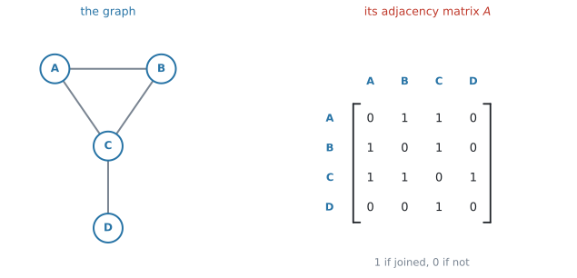
図 1 の \(1\) 行目は、\(A\) から見た行です。\(A\) は \(B\) と \(C\) に結ばれ、\(D\) とは結ばれていないので \(\begin{pmatrix} 0 & 1 & 1 & 0 \end{pmatrix}\) となります。
\[ A = \begin{pmatrix} 0 & 1 & 1 & 0 \\ 1 & 0 & 1 & 0 \\ 1 & 1 & 0 & 1 \\ 0 & 0 & 1 & 0 \end{pmatrix} \tag{1}\]
図と行列は、同じ情報を持っています。 違うのは、行列なら電卓に入れて計算できるという一点だけです。それが、このページのねらいです。
2. まず、vertex の順序を決めます
行列を書き始める前に、必ずやることが \(1\) つあります。
vertex を並べる順序を決めて、それを書きとめる。
式 1 は \(A\)、\(B\)、\(C\)、\(D\) の順で書いたものです。\(D\)、\(C\)、\(B\)、\(A\) の順で書けば、同じ graph から違う行列が出ます。 どちらも正しく、どちらも同じ graph を表しています。
図 1 のように、上と左に名前を書いておきます。\(30\) 秒もかかりません。
これをしないと、\(A^{2}\) を読むときに「\(2\) 行目は \(B\) だったか \(C\) だったか」で必ず迷います。この項目の失点の多くは、行列の中身ではなく、読み違いから出ます。
問題文が using the order P, Q, R, S と指定していたら、その順に従ってください。 指定がなければ、問題文に出てくる順（ふつうはアルファベット順）にします。
3. 行が「どこから」、列が「どこへ」です
\((i,\ j)\) 成分は、\(i\) から \(j\) への edge の本数です。
成分は \(0\) と \(1\) とはかぎりません
成分は「edge の本数」なので、
- simple graph（loop も multiple edge もない graph、AHL 3.14）なら、成分は \(0\) か \(1\) だけです
- 同じ \(2\) 点を結ぶ edge が \(2\) 本あれば、その成分は \(2\) になります。\(3\) 本なら \(3\) です
シラバスはこの項目について Consideration of simple graphs と書いているので、試験に出る行列の成分は、ふつう \(0\) と \(1\) だけです。ただ、\(2\) が出てきたときに「書き間違いだ」と決めつけないでください。multiple edge があるという意味です。
行の和は degree です（条件付き）
\(1\) 行を横に足すと、その vertex の degree になります。
式 1 の \(3\) 行目は \(1 + 1 + 0 + 1 = 3\) で、\(\deg(C) = 3\) ✓（AHL 3.14）
\(2\) つ条件があります。
- undirected であること。directed graph では、行の和は out degree、列の和は in degree になります
- loop がないこと。loop は degree に \(2\) を足しますが（AHL 3.14）、行列の対角成分には \(1\) と書く流儀もあり、そのときは行の和が degree より \(1\) 小さくなります
試験に出る graph はほとんど loop のない simple graph なので、ふだんはそのまま使えます。 loop が描いてある図でだけ、ここに戻ってきてください。
条件がそろっていれば、書き写しの検算に使えます。 degree を図から数えたものと、行の和が合っているかを見てください。
4. undirected graph の adjacency matrix は対称です
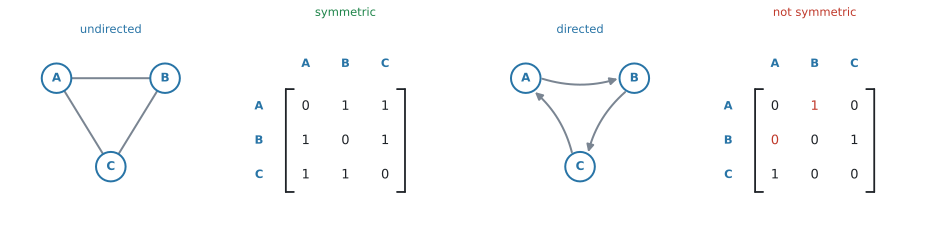
undirected graph では、\(A\) と \(B\) が結ばれていれば \(B\) と \(A\) も結ばれています。ですから \((1,2)\) 成分と \((2,1)\) 成分は必ず同じで、対角線を折り目にして折り返すと重なります。
directed graph では、そうはなりません。図 2 の右では、\(A \to B\) の矢印はありますが \(B \to A\) はないので、\((1,2)\) 成分は \(1\)、\((2,1)\) 成分は \(0\) です。
undirected graph の問題で、書いた行列が対称になっていなければ、どこかで書き間違えています。
対角線をはさんで、\(1\) 組ずつ見くらべてください。
\((i,\ i)\) 成分は「\(i\) から \(i\) への edge」、つまり loop の数です。simple graph には loop がないので、対角線は全部 \(0\) になります。
対角線に \(0\) でない数が出てきたら、loop のある graph です。
5. 行列から graph をかきもどせます
同じ情報を持っているので、逆向きの作業もできます。 試験でも問われます。
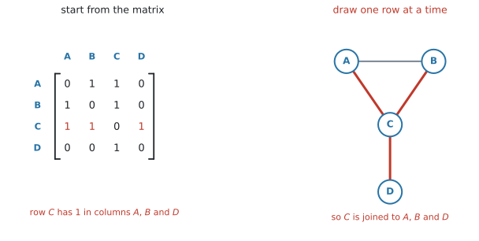
手順は \(1\) つだけです。
\(1\) 行ずつ見て、\(1\) が立っている列の vertex と結ぶ。
図 3 では、\(C\) の行に \(A\)、\(B\)、\(D\) の列で \(1\) が立っています。ですから \(C\) を \(A\)、\(B\)、\(D\) と結びます。
undirected graph では行列が対称なので、\(AB\) と \(BA\) は同じ \(1\) 本の edge です。両方を見ると、同じ edge を \(2\) 度描くことになります。
対角線より上の三角だけを見て、そこにある \(1\) の数だけ edge を描いてください。その本数が、そのまま edge の数になります。
検算。 描いた図の degree と、行の和を見くらべます（第3節）。
6. walk は、edge をたどった道です
walk（歩道）は、vertex から vertex へ、edge をたどって進んだ道のことです。通った edge の本数を、その walk の length（長さ）といいます。
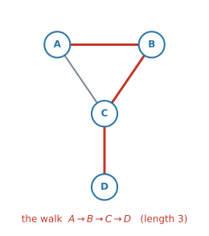
図 4 の \(A \to B \to C \to D\) は、edge を \(3\) 本通っているので length \(3\) の walk です。
\(A \to B \to A \to C\) も、立派な length \(3\) の walk です。\(A\) を \(2\) 回通り、edge \(AB\) を \(2\) 回通っていますが、それでよいのです。
walk は、いちばんゆるいたどり方です。「もどっているから数えない」と考えると、答えが小さくなります。
制限の付いたたどり方には、trail、path、circuit、cycle という別の名前があります。それらは AHL 3.16 の第1節でまとめて扱います。この項目で数えるのは walk だけです。
7. \(A^{2}\) の成分は、途中の vertex を数えています
ここがこの項目の中心です。まず \(2\) 乗だけを、具体的に見ます。
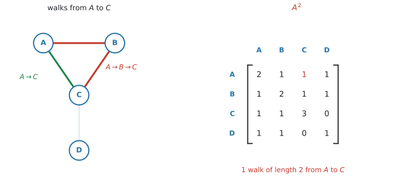
図 5 で、\(A\) から \(C\) への length \(2\) の walk を探します。length \(2\) ということは、途中に vertex を \(1\) つはさむということです。
はさめる候補は \(A\)、\(B\)、\(C\)、\(D\) の \(4\) つ。\(1\) つずつ試します。
| 途中の点 \(k\) | \(A \to k\) | \(k \to C\) | 通れるか |
|---|---|---|---|
| \(A\) | ✗（loop なし） | — | ✗ |
| \(B\) | ○ | ○ | ○ |
| \(C\) | ○ | ✗（loop なし） | ✗ |
| \(D\) | ✗ | ○ | ✗ |
通れるのは \(A \to B \to C\) の \(1\) 本だけです。そして \(A^{2}\) の \((A,\ C)\) 成分も \(1\) になっています ✓
直接つながっている \(A \to C\) は、length \(1\) なので数えません。 聞かれているのは長さ \(2\) の道だけです。
電卓で \(A^{2}\) を出して、見くらべてください
いま数えたのは \(1\) か所だけです。ほかの成分も合っているかどうかは、電卓に \(A\) を入れて \(2\) 乗すれば分かります。
\[ A = \begin{pmatrix} 0 & 1 & 1 & 0 \\ 1 & 0 & 1 & 0 \\ 1 & 1 & 0 & 1 \\ 0 & 0 & 1 & 0 \end{pmatrix} \qquad \Longrightarrow \qquad A^{2} = \begin{pmatrix} 2 & 1 & 1 & 1 \\ 1 & 2 & 1 & 1 \\ 1 & 1 & 3 & 0 \\ 1 & 1 & 0 & 1 \end{pmatrix} \tag{2}\]
\(4 \times 4\) の行列を入れて \(2\) 乗するだけです（GDC 第2節）。手で \(16\) 個の成分を計算する必要はありません。
\((A,\ C)\) 成分は \(1\)。 表 1 で数えた本数と一致しています ✓
ほかの成分も、同じように確かめられます。たとえば \((C,\ D)\) 成分は \(0\) です。\(D\) につながっているのは \(C\) だけなので、\(C \to \square \to D\) の \(\square\) に入れる vertex がありません。
8. 同じ理由で、\(A^{k}\) が長さ \(k\) の walk を数えます
\(A^{3}\) は \(A^{2}\) に \(A\) を掛けたものです。「\(2\) 歩の道」に「もう \(1\) 歩」を足しているだけなので、第7節とまったく同じ理屈が通ります。
\[ \bigl(A^{k}\bigr)_{ij} = \text{（$i$ から $j$ への、長さ $k$ の walk の数）} \tag{3}\]
シラバスの書き方もこれです。
Given an adjacency matrix \(A\), the \((i,\ j)\)th entry of \(A^{k}\) gives the number of \(k\) length walks from \(i\) to \(j\).
directed graph でも、そのまま成り立ちます。ただし walk は、矢印の向きに逆らえません。
\(A^{2}\) の対角成分（条件付き）
\((A^{2})_{ii}\) は「\(i\) を出て、\(1\) 点はさんで \(i\) にもどる walk の数」です。
隣へ行って、そのまま引き返すだけなので、これは隣の数、つまり degree と同じになります。
図 5 の \(A^{2}\) の対角線は \(2,\ 2,\ 3,\ 1\) で、第3節の degree と一致します ✓
- directed graph では成り立ちません。 行って帰れるとはかぎらないからです。\((A^{2})_{ii}\) が数えるのは「往復できる隣の数」です
- loop があるとずれます。 loop \(1\) 本だけでも、\(i \to i \to i\) という長さ \(2\) の walk が増えます
undirected で loop がないときだけ、「\(A^{2}\) の対角 \(=\) degree」と書いてください。問題文に simple graph とあるかどうかを、先に確かめます。
9. 「ちょうど \(k\)」「\(1\) から \(k\)」「\(0\) から \(k\)」を区別します
問題文の言い方で、足すものが変わります。
| 問題文 | 計算するもの |
|---|---|
of length k（ちょうど \(k\)） |
\(A^{k}\) の成分だけ |
of length k or less / at most k |
\(A + A^{2} + \cdots + A^{k}\) |
| 長さ \(0\) も数える場合 | \(I + A + A^{2} + \cdots + A^{k}\) |
\[ A + A^{2} + \cdots + A^{k} \tag{4}\]
\(I\)（identity matrix）を足すのは、「\(1\) 歩も動かない」を \(1\) 通りと数えるときです。\(I\) の対角成分が \(1\)、それ以外が \(0\) なのは、まさに「自分から自分へは \(1\) 通り、他へは \(0\) 通り」だからです。
試験でふつうに length 3 or less と言われたときは、長さ \(0\) は数えません。 \(A + A^{2} + A^{3}\) です。
including staying at the same vertex のような但し書きが付いたときだけ、\(I\) を足してください。問題文が決めます。
of length 3 と of length 3 or less は別の問いです
前者は \(A^{3}\) の成分だけ、後者は \(A + A^{2} + A^{3}\) の成分です。
問題文の or less / at most に印を付けてから、計算を始めてください。ここだけで答えが変わります。
10. weighted adjacency table
edge に重みが付いているときは、\(1\) の代わりに重みそのものを書きます。これを weighted adjacency table（重み付き隣接表）といいます。
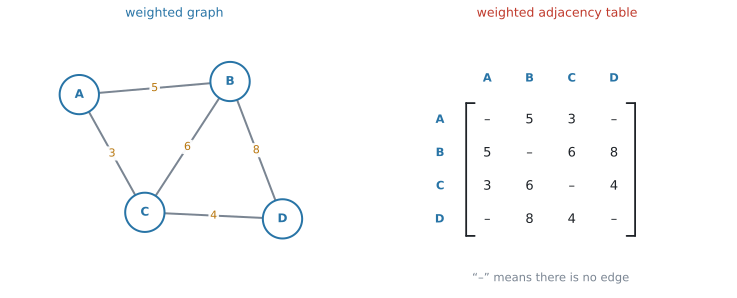
シラバスは、重みについて Weights could be costs, distances, lengths of time for example と書いています。距離とはかぎりません。
edge がないところの書き方
edge がないマスには、\(0\) ではなく 「\(-\)」や「\(\infty\)」と書きます。
\(0\) は「距離 \(0\) でつながっている」と読めてしまいます。「つながっていない」と「距離が \(0\)」は別のことです。
このサイトでは「\(-\)」で統一します。ただし、問題文が別の記号を使っていたら、そちらに合わせてください。 表を読むときは、まず「edge がないマスに何が書いてあるか」を確かめます。
累乗しても、walk の数にはなりません
式 3 が数えているのは、「edge の本数」を並べた行列を掛け合わせた結果です。\(1 \times 1 = 1\)、\(1 \times 0 = 0\) という掛け算が、「\(2\) 本続けて通れるか」をそのまま表していました（第7節）。
重みの表を（「\(-\)」を \(0\) とみなして）\(2\) 乗すると、\(5 \times 8\) のような重みどうしの積が出てきます。これは「\(2\) 歩の道の数」ではありません。
図 6 の表を \(2\) 乗すると、\((A,\ D)\) 成分は \(5 \times 8 + 3 \times 4 = 52\) になります。いっぽう \(A\) から \(D\) への長さ \(2\) の walk は \(A \to B \to D\) と \(A \to C \to D\) の \(2\) 本です。\(52\) と \(2\) は、まったく別のものです。
重みの表は、累乗するのではなく、表のまま読んで使います。 AHL 3.16 の Prim’s algorithm は、この表の上でそのまま実行できます。
11. transition matrix
transition matrix（推移行列）は、「いまここにいる人が、次にどこへ行くか」の確率を並べた行列です。directed graph から作れます。
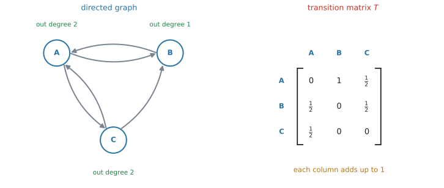
まず、仮定を書きます
graph には確率が書かれていません。ですから、確率をどう割りふるかは、こちらが決めることになります。
この項目でずっと使うのは、次の仮定です。
いまいる vertex から出ている edge のうち、\(1\) 本を等しい確率で選ぶ。 directed graph なら、出ている矢印から選びます。
出ている矢印が \(3\) 本なら、それぞれ \(\frac{1}{3}\) です。問題文には、chooses each available path at random（進める道を無作為に選ぶ）や is equally likely to follow any link のような一文が添えられているのがふつうです。
その一文を探してください。 確率が別のしかたで与えられていることもあります（「\(A\) からは \(70\%\) が \(B\) へ」など）。そのときは、指示された確率をそのまま入れます。
この仮定のもとでの作り方は \(2\) 段階です。
- vertex \(j\) の out degree を数える
- \(j\) から出る矢印それぞれに、\(\dfrac{1}{\text{out degree}}\) を割りふる
図 7 の \(A\) は out degree \(2\) なので、\(B\) へ \(\frac{1}{2}\)、\(C\) へ \(\frac{1}{2}\) です。
undirected graph のときは、degree で割ります
シラバスの文は undirected or directed graph です。undirected graph からも transition matrix は作れます。
undirected graph には向きがないので、どの edge も両方向に通れます。 ですから、vertex \(j\) から出る先は \(\deg(j)\) 通りあり、それぞれの確率は \(\dfrac{1}{\deg(j)}\) です。「out degree」を「degree」に読みかえるだけで、あとは同じです。
検算。 列の和は、やはり \(1\) になります。
行と列が、adjacency matrix と入れかわります
シラバスは、transition matrix について次のように書いています。
\(s_n = T^{n}s_0\), where \(T\) is the transition matrix, with \(T_{ij}\) representing the probability of moving from state \(j\) to state \(i\)
つまり transition matrix では、列が「どこから」、行が「どこへ」です。第3節の adjacency matrix とちょうど逆になっています。
| 行 | 列 | |
|---|---|---|
| adjacency matrix | どこから | どこへ |
| transition matrix | どこへ | どこから |
ここは、この項目でいちばん取りちがえやすいところです。 矢印 \(1\) 本を追いかけて、行列のどこに入るかを見てください。
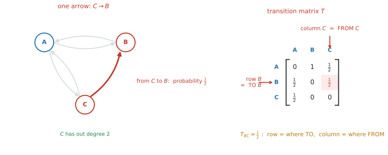
図 8 の左で、\(C\) から \(B\) へ矢印が \(1\) 本出ています。\(C\) の out degree は \(2\)（\(A\) へと \(B\) へ）なので、この矢印の確率は \(\dfrac{1}{2}\) です。
この \(\dfrac{1}{2}\) が入るのは、行 \(B\)、列 \(C\) です。
- 列を見る … 「\(C\) から」出発する話なので、列は \(C\)
- 行を見る … 「\(B\) へ」着く話なので、行は \(B\)
adjacency matrix なら、\(C \to B\) は行 \(C\)、列 \(B\) に入りました。同じ矢印が、\(2\) つの行列では反対の場所に入るわけです。
transition matrix は、列ごとに作ると間違えません。
「\(C\) の列を作る」と決めたら、\(C\) から出ている矢印だけを見ます。\(C\) からは \(A\) と \(B\) へ出ているので、その \(2\) か所に \(\dfrac{1}{2}\) を書き、残りは \(0\)。書き終えたら、その列を縦に足して \(1\) になるかを見ます（第11節）。
行ごとに作ろうとすると、\(1\) になる保証がないので検算ができません。必ず列から。
理由は、transition matrix が「掛け算される側」だからです。
いまどこにいるかの確率を、縦に並べた state matrix \(s_n\) で表します。\(1\) 歩進んだあとは
\[ s_{n+1} = T s_n \tag{5}\]
です。行列とベクトルのかけ算の決まり（AHL 1.14）から、この式の \(i\) 番目の成分は
\[ (s_{n+1})_i = T_{i1}(s_n)_1 + T_{i2}(s_n)_2 + \cdots + T_{in}(s_n)_n \]
になります。左辺は「次に \(i\) にいる確率」です。右辺の \(T_{ij}(s_n)_j\) は「いま \(j\) にいて、次に \(i\) へ移る」分です。
ですから、\(T_{ij}\) は「\(j\) から \(i\) へ」でなければ、この式が成り立ちません。 縦ベクトルを左から掛けるという書き方が、向きを決めているのです。
adjacency matrix には、この掛けられ方の約束がありません。ただの表として「行から、列へ」と読むだけです。約束が違うから、向きも違う——それだけのことです。
列の和は、必ず \(1\) です
\(1\) つの vertex から出ていく確率を全部足せば \(1\) になります。どこかへは必ず行くからです。
図 7 の各列は \(0 + \frac{1}{2} + \frac{1}{2} = 1\)、\(1 + 0 + 0 = 1\)、\(\frac{1}{2} + \frac{1}{2} + 0 = 1\) ✓
検算に使えるのは、列の和だけです。 行の和は \(1\) になることもあれば、ならないこともあります。そこを見ても、正しく作れたかは分かりません。
出る矢印がない vertex — absorbing state
出る矢印が \(1\) 本もない vertex があると、第11節の仮定の「出ている矢印から \(1\) 本選ぶ」が使えません。選ぶものがないからです。
ただし、行き詰まりというわけではありません。 モデルを作る側が、その vertex での動き方を決めればよいのです。よく使われるのは次の決め方です。
その vertex に入ったら、そのまま留まる。
こう決めると、その列は「自分の行だけ \(1\)、あとは \(0\)」になり、列の和も \(1\) になります。このような state を absorbing state（吸収状態）といいます。シラバスでは、この語は AHL 4.19 の Connections（Other contexts） の欄に出てきます。試験に出る内容そのものではありませんが、名前を知っておくと、問題文の「入ったら留まる」という条件が読みやすくなります。
この項目についてのシラバスの文は、次のようになっています。
Construction of the transition matrix for a strongly-connected, undirected or directed graph
strongly connected（AHL 3.14）なら、どの vertex からも必ずどこかへ出られます。ですから、第11節の仮定だけで、余分な決め事をせずに全部の列が埋まります。
この項目で作らされるのは、その形の graphだと思ってください。absorbing state を扱うときは、その vertex での動き方が問題文で与えられているかどうかを、先に確かめてください。
12. 長い目で見ると — Markov chain と PageRank
\(T\) を作ったら、次は「何歩か進んだあと、どこにいる確率が高いか」を知りたくなります。式 5 をくり返せば
\[ s_n = T^{n} s_0 \tag{6}\]
です。この式と、\(n\) を大きくしたときの様子を調べるのが、AHL 4.19 の Markov chains（マルコフ連鎖）です。公式集の \(s_n = T^{n}s_0\) も、そちらの欄にあります。
strongly connected であっても、\(s_n\) が \(1\) つの分布に近づくとはかぎりません。
たとえば、\(A\) と \(B\) の \(2\) 状態だけで、\(A \to B\) と \(B \to A\) しかないモデルを考えます。これは strongly connected です。\(A\) から出発すると、\(s_n\) は \(\begin{pmatrix} 1 \\ 0 \end{pmatrix}\) と \(\begin{pmatrix} 0 \\ 1 \end{pmatrix}\) を行ったり来たりするだけで、\(1\) つの分布に近づきません。
落ち着くかどうかは、strongly connected だけでは決まりません。シラバスは AHL 4.19 で、落ち着く場合の求め方を、eigenvalue（固有値）が \(1\) の eigenvector（固有ベクトル）として扱います（AHL 1.15）。
Awareness that the solution is the eigenvector corresponding to the eigenvalue equal to \(1\) and whose entries have been scaled to sum to \(1\)
この項目では、\(T\) を正しく作れることと、\(T^{n}s_0\) の意味が言えることまでで十分です。
PageRank
シラバスは、この項目の応用として Google の PageRank algorithm を挙げています。
Consideration of simple graphs, including the Google PageRank algorithm as an example of this
基本的な発想はこうです。ウェブページを vertex、リンクを directed edge とします。「でたらめにリンクをたどり続ける人」が、長い目で見てどのページにいる割合が高いか——それをそのページの重要度とみなす、という考え方です。
つまり、リンクの構造から transition matrix を作って、その落ち着き先を調べるわけです。
小さな例で見ます。ページが \(A\)、\(B\)、\(C\) の \(3\) つだけの世界です。
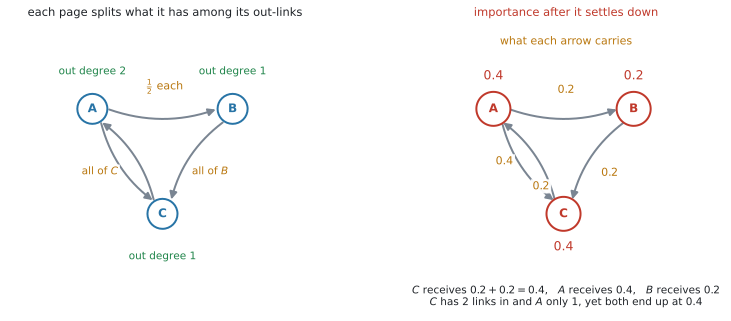
図 9 の左が、リンクのつながりです。\(A\) は \(B\) と \(C\) の \(2\) か所へリンクしているので out degree は \(2\)、\(B\) は \(C\) へ、\(C\) は \(A\) へ、それぞれ \(1\) か所だけです。
この \(3\) ページの transition matrix は
\[ T = \begin{pmatrix} 0 & 0 & 1 \\ \tfrac{1}{2} & 0 & 0 \\ \tfrac{1}{2} & 1 & 0 \end{pmatrix} \tag{7}\]
で、落ち着き先は \(s = (0.4,\ 0.2,\ 0.4)\) になります。\(Ts = s\) を確かめてみてください。
ここから、\(2\) つのことが読み取れます。
\(1\) つ目。重要度は、リンクをさかのぼって流れこみます。 落ち着き先は \(s = Ts\) をみたすので、あるページの値は「そこへ入ってくるぶんの合計」です。図 9 の右で、\(C\) には \(A\) から \(0.2\)、\(B\) から \(0.2\) が入って合計 \(0.4\)。\(A\) には \(C\) から \(0.4\) が入って \(0.4\) です。ですから、リンクの本数だけでなく、リンク元がどれだけ重要かが効きます。
\(2\) つ目。out degree で割るのは、これとは別の理由です。 \(1\) つのページは、自分の重要度を、出しているリンクに等分して渡します。\(A\) は \(0.4\) を \(2\) 本に分けるので、\(1\) 本あたり \(0.2\)。\(C\) は \(0.4\) を \(1\) 本にそのまま渡すので \(0.4\) です。リンクをたくさん出しているページからの \(1\) 本は、それだけ軽くなります。
この \(2\) つが重なって、\(C\) はリンクを \(2\) 本受けているのに、\(1\) 本しか受けていない \(A\) と同じ \(0.4\) になりました。「リンクの数を数えるだけ」では出てこない結果です。
リンクだけをたどり続けると、absorbing state のような「入ったら出られない」ページで止まってしまいます。実際のアルゴリズムでは、これを damping factor（減衰係数）と random jump（ランダムジャンプ）で避けます。
一定の確率でリンクをたどり、残りの確率では、どこか別のページへ直接飛ぶ。
こうすると、どのページからもどのページへも行けるようになり、落ち着き先がちゃんと定まります。
この工夫は、PageRank を実際に動かすためのものです。 ここでは「リンクをたどるだけでは足りない」という点だけ押さえておけば十分です。第12節の注意と、そのままつながっています。
Why it works
第7節では、\(A^{2}\) の \(1\) つの成分を具体的に見ました。ここでは、それがどの成分でも、\(A^{k}\) のどの \(k\) でも成り立つことを書き下します。
行列のかけ算の定義（AHL 1.14）から、\(A^{2}\) の \((i,\ j)\) 成分は
\[ \bigl(A^{2}\bigr)_{ij} = A_{i1}A_{1j} + A_{i2}A_{2j} + \cdots + A_{in}A_{nj} \tag{8}\]
です。\(1\) つの項 \(A_{ik}A_{kj}\) を見てください。
- \(A_{ik}\) は「\(i\) から \(k\) への edge の本数」
- \(A_{kj}\) は「\(k\) から \(j\) への edge の本数」
\(i \to k \to j\) という \(2\) 歩の道の数は、この \(2\) つの積です。\(i \to k\) の選び方が \(A_{ik}\) 通り、そのそれぞれについて \(k \to j\) の選び方が \(A_{kj}\) 通りだからです。片方でも \(0\) なら、積は \(0\) になります。
式 8 は、その積を途中の点 \(k\) について全部足したものです。\(2\) 歩の道は、途中の点がどれか \(1\) つに決まっているので、重複も数え落としもなく数えられます。
\(A^{3}\) も同じです。\(A^{3} = A^{2} \cdot A\) なので
\[ \bigl(A^{3}\bigr)_{ij} = \sum_{k} \bigl(A^{2}\bigr)_{ik} A_{kj} \]
となり、「\(i\) から \(k\) への \(2\) 歩の道」と「\(k\) から \(j\) への \(1\) 歩」を組み合わせて足しています。これは「\(i\) から \(j\) への \(3\) 歩の道を、最後から \(1\) つ手前の点で分類して数える」ということです。
同じ議論を \(1\) 段ずつ積み上げれば、\(A^{k}\) まで成り立ちます。
この議論のどこにも「同じ点を通ってはいけない」という制限が入っていないことに注意してください。だから \(A^{k}\) が数えるのは walk であって、path ではありません（第6節）。
Worked examples
問題文は英語です。意味が理解できなかったら、問題文の下の「日本語訳」を開いてください。解説は日本語です。
例題 1 The graph \(G\) is shown below.
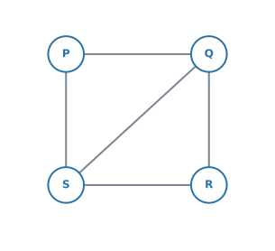
(a) Write down the adjacency matrix \(A\) of \(G\), using the order \(P\), \(Q\), \(R\), \(S\).
(b) Find \(A^{2}\), and hence write down the number of walks of length \(2\) from \(P\) to \(R\).
(c) Find the number of walks of length \(3\) or less from \(P\) to \(R\).
日本語訳
グラフ \(G\) が下に示されています。
(a) \(P\)、\(Q\)、\(R\)、\(S\) の順で、\(G\) の隣接行列 \(A\) を書きなさい。
(b) \(A^{2}\) を求め、それを使って \(P\) から \(R\) への長さ \(2\) の walk の数を書きなさい。
(c) \(P\) から \(R\) への長さ \(3\) 以下の walk の数を求めなさい。
(a) using the order P, Q, R, S と指定されているので、その順に並べます（第2節）。\(1\) 行ずつ、その vertex の隣を拾います。
- \(P\) は \(Q\) と \(S\) に結ばれています
- \(Q\) は \(P\)、\(R\)、\(S\)
- \(R\) は \(Q\) と \(S\)
- \(S\) は \(P\)、\(Q\)、\(R\)
\[ A = \begin{pmatrix} 0 & 1 & 0 & 1 \\ 1 & 0 & 1 & 1 \\ 0 & 1 & 0 & 1 \\ 1 & 1 & 1 & 0 \end{pmatrix} \]
検算。 対称になっています ✓（第4節）行の和は \(2,\ 3,\ 2,\ 3\) で、図の degree と一致します ✓（第3節）
(b) 電卓に入れて \(2\) 乗します（GDC 第2節）。
\[ A^{2} = \begin{pmatrix} 2 & 1 & 2 & 1 \\ 1 & 3 & 1 & 2 \\ 2 & 1 & 2 & 1 \\ 1 & 2 & 1 & 3 \end{pmatrix} \]
\(P\) の行、\(R\) の列を見ます。\(2\) です。
検算。 \(P \to Q \to R\) と \(P \to S \to R\) の \(2\) 本です ✓
(c) or less があるので、長さ \(1\)、\(2\)、\(3\) を全部足します（表 2）。
\[ A^{3} = \begin{pmatrix} 2 & 5 & 2 & 5 \\ 5 & 4 & 5 & 5 \\ 2 & 5 & 2 & 5 \\ 5 & 5 & 5 & 4 \end{pmatrix} \]
\((P,\ R)\) 成分だけを見ればよいので、\(3\) つ足します。
\[ 0 + 2 + 2 = 4 \]
長さ \(0\) は数えません（第9節）。問題文にその指示がないからです。
(a) \[ A = \begin{pmatrix} 0 & 1 & 0 & 1 \\ 1 & 0 & 1 & 1 \\ 0 & 1 & 0 & 1 \\ 1 & 1 & 1 & 0 \end{pmatrix} \]
(b) \[ A^{2} = \begin{pmatrix} 2 & 1 & 2 & 1 \\ 1 & 3 & 1 & 2 \\ 2 & 1 & 2 & 1 \\ 1 & 2 & 1 & 3 \end{pmatrix} \qquad \Rightarrow \qquad 2 \ \text{walks} \]
(c) \[ (A)_{PR} + (A^{2})_{PR} + (A^{3})_{PR} = 0 + 2 + 2 = 4 \]
例題 2 The matrix below is the adjacency matrix of a graph, using the order \(R\), \(S\), \(T\), \(U\).
\[ A = \begin{pmatrix} 0 & 1 & 1 & 1 \\ 1 & 0 & 0 & 0 \\ 1 & 0 & 0 & 1 \\ 1 & 0 & 1 & 0 \end{pmatrix} \]
(a) Draw the graph.
(b) Write down the degree of each vertex, and the number of edges.
(c) Find the number of walks of length \(2\) from \(S\) to \(T\), and list them.
日本語訳
下の行列は、\(R\)、\(S\)、\(T\)、\(U\) の順で書かれた、あるグラフの隣接行列です。
(a) そのグラフをかきなさい。
(b) 各頂点の次数と、辺の数を書きなさい。
(c) \(S\) から \(T\) への長さ \(2\) の walk の数を求め、それらを書き出しなさい。
(a) 第5節のとおり、\(1\) 行ずつ読みます。対称なので、対角線より上だけを見れば足ります。
| 行 | \(1\) が立っている列 | 描く edge |
|---|---|---|
| \(R\) | \(S\)、\(T\)、\(U\) | \(RS\)、\(RT\)、\(RU\) |
| \(S\) | （\(R\) だけ。もう描いた） | — |
| \(T\) | \(U\)（\(R\) はもう描いた） | \(TU\) |
| \(U\) | （もう全部描いた） | — |
edge は \(RS\)、\(RT\)、\(RU\)、\(TU\) の \(4\) 本です。\(R\) を真ん中に置き、\(S\) を外に、\(T\) と \(U\) を \(R\) とつないだうえで \(T\) と \(U\) どうしも結ぶと、三角形 \(RTU\) に \(S\) が \(1\) 本ぶら下がった形になります。
(b) 行の和がそのまま degree です（第3節）。この graph は undirected で loop がないので、条件がそろっています。
| vertex | \(R\) | \(S\) | \(T\) | \(U\) |
|---|---|---|---|---|
| \(\deg\) | \(3\) | \(1\) | \(2\) | \(2\) |
\[ 3 + 1 + 2 + 2 = 8 = 2 \times 4 \]
edge は \(4\) 本です（AHL 3.14）。(a) で数えた \(4\) 本と合っています ✓
(c) \(S\) から出ているのは \(SR\) の \(1\) 本だけなので、途中にはさめるのは \(R\) しかありません。\(R\) から \(T\) へは行けるので、
\[ S \to R \to T \]
の \(1\) 本です。
検算。 \(A^{2}\) の \((S,\ T)\) 成分を見ると
\[ A^{2} = \begin{pmatrix} 3 & 0 & 1 & 1 \\ 0 & 1 & 1 & 1 \\ 1 & 1 & 2 & 1 \\ 1 & 1 & 1 & 2 \end{pmatrix} \]
\(2\) 行目 \(3\) 列目は \(1\) ✓
(a) Edges: \(RS\), \(RT\), \(RU\), \(TU\). （図をかく）
(b) \[ \deg(R)=3,\quad \deg(S)=1,\quad \deg(T)=2,\quad \deg(U)=2 \] \[ 3+1+2+2 = 8 = 2E \quad \Rightarrow \quad E = 4 \]
(c) There is \(1\) walk: \(S \to R \to T\).
図だけを提出すると、\(1\) 本読み落としていたときに、どこで間違えたかが採点者に伝わりません。
\(RS\)、\(RT\)、\(RU\)、\(TU\) と並べて書いてから、図をかいてください。 自分の検算にもなります。
例題 3 The matrix \(A\) is the adjacency matrix of a simple graph. The diagonal entries of \(A^{2}\) are \(2\), \(3\), \(2\) and \(3\).
(a) State what the diagonal entries of \(A^{2}\) represent.
(b) Hence write down the number of edges of the graph.
日本語訳
行列 \(A\) は、ある simple graph の隣接行列です。\(A^{2}\) の対角成分は \(2\)、\(3\)、\(2\)、\(3\) です。
(a) \(A^{2}\) の対角成分が何を表しているかを述べなさい。
(b) これを使って、このグラフの辺の数を書きなさい。
(a) \((A^{2})_{ii}\) は「\(i\) から出て、\(1\) 点はさんで \(i\) にもどる walk の数」です。
隣へ行って引き返すだけなので、これは隣の数、つまり degree と同じです。問題文に simple graph とあるので、第8節の条件がそろっています。
試験ではこう書く
The diagonal entry \((A^{2})_{ii}\) is the number of walks of length \(2\) from vertex \(i\) back to itself. In a simple undirected graph these are exactly the walks out to a neighbour and straight back, so the entry equals the degree of vertex \(i\).
（\(i\) から \(i\) への長さ \(2\) の walk の数であり、undirected な simple graph では「隣へ行って引き返す」道だけなので \(i\) の次数に等しい、という意味です。）
(b) degree が \(2,\ 3,\ 2,\ 3\) と分かったので、AHL 3.14 の関係が使えます。
\[ 2 + 3 + 2 + 3 = 10 = 2 \times (\text{number of edges}) \]
\[ \text{number of edges} = 5 \]
(a) \((A^{2})_{ii}\) counts the walks of length \(2\) from vertex \(i\) back to itself. For a simple undirected graph this equals the degree of vertex \(i\).
(b) \[ \sum \deg = 2+3+2+3 = 10 = 2E \quad \Rightarrow \quad E = 5 \]
例題 4 The directed graph below shows the links between three web pages \(X\), \(Y\) and \(Z\).
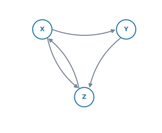
(a) Write down the adjacency matrix, using the order \(X\), \(Y\), \(Z\).
(b) Find the number of walks of length \(2\) from \(X\) back to \(X\).
(c) A user clicks one of the available links at random, each link being equally likely. Write down the transition matrix \(T\).
日本語訳
下の有向グラフは、\(3\) つのウェブページ \(X\)、\(Y\)、\(Z\) のあいだのリンクを表しています。
(a) \(X\)、\(Y\)、\(Z\) の順で隣接行列を書きなさい。
(b) \(X\) から \(X\) へもどる長さ \(2\) の walk の数を求めなさい。
(c) 利用者は、進めるリンクのうち \(1\) つを、どれも同じ確率で選んでクリックします。推移行列 \(T\) を書きなさい。
(a) 矢印は \(X \to Y\)、\(X \to Z\)、\(Y \to Z\)、\(Z \to X\) の \(4\) 本です。行が「から」でした（第3節）。
\[ A = \begin{pmatrix} 0 & 1 & 1 \\ 0 & 0 & 1 \\ 1 & 0 & 0 \end{pmatrix} \]
対称ではありません。 directed graph なので、それでよいのです。
(b) \(A\) を \(2\) 乗して、\((X,\ X)\) 成分を見ます。
\[ A^{2} = \begin{pmatrix} 1 & 0 & 1 \\ 1 & 0 & 0 \\ 0 & 1 & 1 \end{pmatrix} \]
\((X,\ X)\) 成分は \(1\) です。\(X \to Z \to X\) の \(1\) 本だけです ✓
対角成分が degree になる話は、ここでは使えません。 directed graph だからです（第8節）。
(c) 問題文に each link being equally likely とあります。これが第11節の仮定です。まず out degree を数えます。
| vertex | \(X\) | \(Y\) | \(Z\) |
|---|---|---|---|
| out degree | \(2\) | \(1\) | \(1\) |
ここで行と列が入れかわります（第11節）。\(X\) の列には、\(Y\) へ \(\frac{1}{2}\)、\(Z\) へ \(\frac{1}{2}\) を入れます。\(Y\) の列は \(Z\) へ \(1\)、\(Z\) の列は \(X\) へ \(1\) です。
\[ T = \begin{pmatrix} 0 & 0 & 1 \\ \frac{1}{2} & 0 & 0 \\ \frac{1}{2} & 1 & 0 \end{pmatrix} \]
検算。 各列の和が \(1\) になっています ✓（第11節）
(a) \[ A = \begin{pmatrix} 0 & 1 & 1 \\ 0 & 0 & 1 \\ 1 & 0 & 0 \end{pmatrix} \]
(b) \[ A^{2} = \begin{pmatrix} 1 & 0 & 1 \\ 1 & 0 & 0 \\ 0 & 1 & 1 \end{pmatrix} \qquad \Rightarrow \qquad 1 \ \text{walk} \]
(c) \[ T = \begin{pmatrix} 0 & 0 & 1 \\ \frac{1}{2} & 0 & 0 \\ \frac{1}{2} & 1 & 0 \end{pmatrix} \]
例題 5 The weighted adjacency table below shows the distances, in kilometres, between four sites. A dash means that there is no direct road.
| \(A\) | \(B\) | \(C\) | \(D\) | |
|---|---|---|---|---|
| \(A\) | \(-\) | \(5\) | \(3\) | \(-\) |
| \(B\) | \(5\) | \(-\) | \(6\) | \(8\) |
| \(C\) | \(3\) | \(6\) | \(-\) | \(4\) |
| \(D\) | \(-\) | \(8\) | \(4\) | \(-\) |
(a) Explain what the entry “\(-\)” in row \(A\), column \(D\) means.
(b) Find the total distance of the route \(A \to C \to D\).
(c) Find the shortest route from \(A\) to \(D\), and state its length.
日本語訳
下の重み付き隣接表は、\(4\) つの地点のあいだの距離（キロメートル）を表しています。ダッシュ（\(-\)）は、直接の道路がないことを表します。表の見出しは地点の名前です。
(a) \(A\) の行、\(D\) の列にある「\(-\)」が何を意味するかを説明しなさい。
(b) 経路 \(A \to C \to D\) の距離の合計を求めなさい。
(c) \(A\) から \(D\) への最短経路を求め、その距離を書きなさい。
(a) 表の \(A\) の行と \(D\) の列が交わるところが「\(-\)」です。問題文が A dash means that there is no direct road と教えてくれています（第10節）。
試験ではこう書く
There is no direct edge between \(A\) and \(D\): the two sites are not joined by a road. It does not mean that the distance is zero.
（\(A\) と \(D\) を直接つなぐ道路がない、という意味です。距離が \(0\) という意味ではありません。）
(b) 表から \(AC = 3\)、\(CD = 4\) を読みます。
\[ 3 + 4 = 7 \ \text{km} \]
(c) 同じ場所を \(2\) 度通らない道を、全部書き出します。\(A\) から出られるのは \(B\) と \(C\) の \(2\) 方向で、そのあとの分かれ方を考えると \(4\) 通りあります。
| 経路 | 距離 |
|---|---|
| \(A \to C \to D\) | \(3 + 4 = 7\) |
| \(A \to B \to D\) | \(5 + 8 = 13\) |
| \(A \to B \to C \to D\) | \(5 + 6 + 4 = 15\) |
| \(A \to C \to B \to D\) | \(3 + 6 + 8 = 17\) |
いちばん短いのは \(A \to C \to D\) で、\(7\) km です。
(a) There is no edge between \(A\) and \(D\); it does not mean a distance of zero.
(b) \[ 3 + 4 = 7 \ \text{km} \]
(c) \[ A \to C \to D = 7, \qquad A \to B \to D = 13 \] \[ A \to B \to C \to D = 15, \qquad A \to C \to B \to D = 17 \]
The shortest route is \(A \to C \to D\), of length \(7\) km.
Common errors
\(P\)、\(Q\)、\(R\)、\(S\) の順で作った行列を、\(A^{2}\) を読むときに別の順で見てしまう誤りです。
行列のまわりに、vertex の名前を書き込んでください（第2節）。表の見出しがあれば、読み間違えません。
of length 3 と of length 3 or less を取りちがえる
前者は \(A^{3}\) の \(1\) つの成分、後者は \(A + A^{2} + A^{3}\) の成分です（表 2）。
問題文の or less / at most に印を付けてから、計算を始めてください。
\(I\) を足すのは、長さ \(0\)（動かないこと）も数えるときだけです（第9節）。
ふつうの length 3 or less では、\(A + A^{2} + A^{3}\) です。\(I\) を足すと、対角成分だけが \(1\) ずつ多くなります。
weighted adjacency table を \(2\) 乗すると、重みどうしの積が出てきます。それは walk の本数ではありません（第10節）。
区別するのは、成分が「本数」か「重み」かです。
重みの表では、\(0\) は「距離 \(0\)」と読めてしまいます。「\(-\)」か「\(\infty\)」を書いてください。
いっぽう adjacency matrix では、\(0\) が「つながっていない」の意味で正しいものです。\(2\) つの表で、\(0\) の意味が違います。
walk は、同じ vertex も同じ edge も、何度通っても構いません（第6節）。
\(A \to B \to A\) を「もどっているから数えない」と考えて、答えが小さくなる誤りが多いところです。\(A^{k}\) が数えているのは、制限のない walk です。
undirected graph の癖で、\(X \to Y\) を書いたときに \((Y,\ X)\) にも \(1\) を入れてしまう誤りです。
矢印があるほうにだけ書いてください。directed graph の行列は、対称にならないのがふつうです。
これは undirected で loop のない simple graph のときの話です（第8節）。
directed graph の \((A^{2})_{ii}\) が数えるのは、「行って帰れる隣の数」です。degree とは違います。
walk の数は整数です。電卓が \(2.\) や \(1.99999\) と表示したときは、表示の設定の問題です。
Document Settings の Display Digits を確かめてください。答案には整数で書きます。
Using your GDC (TI-Nspire CX II)
この項目から、電卓の出番が一気に増えます。 \(4 \times 4\) を手で \(3\) 乗するのは、時間がかかるうえに間違えます。
1. 行列を打ちこんで、名前を付ける
AHL 1.14 と同じ手順です。
menu → Matrix & Vector → Create → Matrix行と列の数を入れて OK。tab で移動しながら \(0\) と \(1\) を入れ、最後に名前を付けます。
ctrl + sto→に続けて a と打てば、以後は a で呼び出せます。
\(4 \times 4\) なら \(16\) 個です。打ち間違えると、そのあとが全部ずれます。
打ち終わったら、行の和が degree になっているかを見てください。\(30\) 秒の検算で、大きな失点が防げます。
2. 累乗する
^ キーで指数を打つだけです。
a^2
a^3\(3 \times 3\) でも \(4 \times 4\) でも、一瞬で返ります。
3. 「長さ \(k\) 以下」を足す
式 4 は、そのまま打てます。
a + a^2 + a^3長さ \(0\) も数えるときだけ、単位行列を足します。
identity(4) + a + a^2 + a^3\(1\) つの成分だけが要るときも、行列全体を出してから読むほうが速いです。成分を取り出す書き方もありますが、覚えることが増えるだけです。
4. transition matrix は分数のまま入れる
\(\frac{1}{2}\) を \(0.5\) と打っても計算はできますが、答えが小数で出て、書き写すときに桁を落とします。
分数テンプレート（ctrl + ÷）で \(\frac{1}{2}\) のまま入れてください。列の和の検算も、分数のほうが速く済みます。
打ちこんだ transition matrix を t としたとき、
[[1, 1, 1]] * tと打つと、各列の和が \(1\) 行に並んで返ります。 全部 \(1\) なら正しく作れています。
Exercises
各問題に、折りたたみが3つ付いています。日本語訳、解答例（答案用紙に書くべきこと。英語です）、解説（なぜそうなるか。日本語です）。
まず自分で解いて、次に解答例と見くらべてください。解説は、合わなかったときだけ開けば十分です。
1 The graph below has vertices \(A\), \(B\), \(C\) and \(D\).
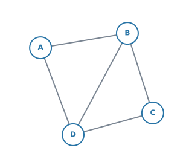
(a) Write down the adjacency matrix \(A\), using the order \(A\), \(B\), \(C\), \(D\).
(b) Write down the degree of each vertex, and check it against your matrix.
日本語訳
下のグラフは、頂点 \(A\)、\(B\)、\(C\)、\(D\) をもちます。
(a) \(A\)、\(B\)、\(C\)、\(D\) の順で隣接行列 \(A\) を書きなさい。
(b) 各頂点の次数を書き、行列と合っているか確かめなさい。
(a) \[ A = \begin{pmatrix} 0 & 1 & 0 & 1 \\ 1 & 0 & 1 & 1 \\ 0 & 1 & 0 & 1 \\ 1 & 1 & 1 & 0 \end{pmatrix} \]
(b) \(\deg(A)=2\), \(\deg(B)=3\), \(\deg(C)=2\), \(\deg(D)=3\)
Each row sum equals the degree of that vertex.
edge は \(AB\)、\(AD\)、\(BC\)、\(BD\)、\(CD\) の \(5\) 本です。
(b) 行の和は \(2,\ 3,\ 2,\ 3\) で、図から数えた degree と一致します。この graph は undirected で loop がないので、第3節の条件がそろっています。合計 \(10\) が \(2 \times 5\) になっていることも確かめられます。
書いた行列が対称になっているかも見てください。undirected graph なので、対称でなければ書き間違いです。
2 For the graph in question 1, find \(A^{2}\) and hence write down the number of walks of length \(2\) from \(A\) to \(C\). List these walks.
日本語訳
問題 1 のグラフについて、\(A^{2}\) を求め、それを使って \(A\) から \(C\) への長さ \(2\) の walk の数を書きなさい。その walk を書き出しなさい。
\[ A^{2} = \begin{pmatrix} 2 & 1 & 2 & 1 \\ 1 & 3 & 1 & 2 \\ 2 & 1 & 2 & 1 \\ 1 & 2 & 1 & 3 \end{pmatrix} \]
There are \(2\) walks: \(A \to B \to C\) and \(A \to D \to C\).
3 For the graph in question 1, find the number of walks of length \(3\) or less from \(A\) to \(B\).
日本語訳
問題 1 のグラフについて、\(A\) から \(B\) への長さ \(3\) 以下の walk の数を求めなさい。
\[ (A)_{AB} + (A^{2})_{AB} + (A^{3})_{AB} = 1 + 1 + 5 = 7 \]
4 The adjacency matrix of a simple graph has \(A^{2}\) with diagonal entries \(3\), \(3\), \(4\), \(2\) and \(2\). Find the number of edges of the graph.
日本語訳
ある simple graph の隣接行列について、\(A^{2}\) の対角成分が \(3\)、\(3\)、\(4\)、\(2\)、\(2\) です。このグラフの辺の数を求めなさい。
The graph is simple and undirected, so the diagonal entries of \(A^{2}\) are the degrees.
\[ 3+3+4+2+2 = 14 = 2E \quad \Rightarrow \quad E = 7 \]
5 The directed graph below shows the one-way paths between three points.
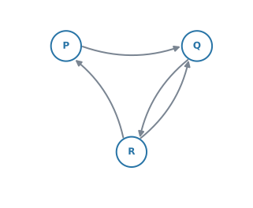
(a) Write down the adjacency matrix, using the order \(P\), \(Q\), \(R\).
(b) Write down the transition matrix for a walker who chooses each available path at random, each path being equally likely.
日本語訳
下の有向グラフは、\(3\) 地点のあいだの一方通行の道を表しています。
(a) \(P\)、\(Q\)、\(R\) の順で隣接行列を書きなさい。
(b) 進める道を無作為に、どれも同じ確率で選ぶ人についての推移行列を書きなさい。
(a) \[ A = \begin{pmatrix} 0 & 1 & 0 \\ 0 & 0 & 1 \\ 1 & 1 & 0 \end{pmatrix} \]
(b) \[ T = \begin{pmatrix} 0 & 0 & \frac{1}{2} \\ 1 & 0 & \frac{1}{2} \\ 0 & 1 & 0 \end{pmatrix} \]
矢印は \(P \to Q\)、\(Q \to R\)、\(R \to P\)、\(R \to Q\) の \(4\) 本です。
(a) 行が「から」です。\(R\) の行だけ \(1\) が \(2\) つ入ります。対称にはなりません。
(b) ここで行と列が入れかわります（第11節）。out degree は \(P\) が \(1\)、\(Q\) が \(1\)、\(R\) が \(2\) です。
\(R\) の列に \(\frac{1}{2}\) を \(2\) つ入れるのが、この問題の山です。
検算。 列の和は \(0+1+0 = 1\)、\(0+0+1 = 1\)、\(\frac{1}{2}+\frac{1}{2}+0 = 1\) ✓
6 For the directed graph in question 5, find the number of walks of length \(2\) from \(P\) to \(R\).
日本語訳
問題 5 の有向グラフについて、\(P\) から \(R\) への長さ \(2\) の walk の数を求めなさい。
\[ A^{2} = \begin{pmatrix} 0 & 0 & 1 \\ 1 & 1 & 0 \\ 0 & 1 & 1 \end{pmatrix} \qquad \Rightarrow \qquad (A^{2})_{PR} = 1 \]
The walk is \(P \to Q \to R\).
使うのは (a) の隣接行列です。transition matrix を \(2\) 乗しても、walk の数は出ません。\(T\) の成分は確率であって、edge の本数ではないからです（第10節と同じ理由です）。
\(P\) から出る矢印は \(Q\) へ \(1\) 本だけ。\(Q\) からは \(R\) へ行けるので、\(P \to Q \to R\) の \(1\) 本です ✓
directed graph では向きが効きます。 \((A^{2})_{RP}\) は別の値になります。
7 Explain why the adjacency matrix of an undirected graph is always symmetric.
日本語訳
無向グラフの隣接行列がいつも対称になる理由を説明しなさい。
In an undirected graph, an edge between \(i\) and \(j\) can be travelled in both directions. So the entry in row \(i\), column \(j\) and the entry in row \(j\), column \(i\) both count the same edge, and they are always equal. Hence \(A = A^{\mathrm{T}}\).
Explain why は、言葉で理由を書く設問です。行列を \(1\) つ書いて「対称だから」では点になりません。
要点は「同じ \(1\) 本の edge を、\(2\) か所で数えている」ことです。向きがないので、どちらから見ても同じ edge です。
directed graph でこれが崩れる理由も、同じ文で説明できます。片方向にしか行けないので、片方だけが \(1\) になるからです。
試験ではこう書く
In an undirected graph an edge joining \(i\) and \(j\) can be travelled in either direction, so the entry in row \(i\), column \(j\) and the entry in row \(j\), column \(i\) count the same edge. They are therefore always equal, and \(A = A^{\mathrm{T}}\).
8 The weighted graph below shows the cost, in dollars, of shipping between four warehouses.
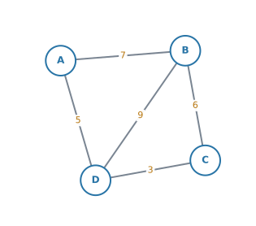
(a) Write down the weighted adjacency table.
(b) Find the cheapest route from \(A\) to \(C\), and state its cost.
日本語訳
下の重み付きグラフは、\(4\) つの倉庫のあいだの輸送費（ドル）を表しています。
(a) 重み付き隣接表を書きなさい。
(b) \(A\) から \(C\) への最も安い経路を求め、その費用を書きなさい。
(a)
| \(A\) | \(B\) | \(C\) | \(D\) | |
|---|---|---|---|---|
| \(A\) | \(-\) | \(7\) | \(-\) | \(5\) |
| \(B\) | \(7\) | \(-\) | \(6\) | \(9\) |
| \(C\) | \(-\) | \(6\) | \(-\) | \(3\) |
| \(D\) | \(5\) | \(9\) | \(3\) | \(-\) |
(b) \[ A \to D \to C = 5 + 3 = 8, \qquad A \to B \to C = 7 + 6 = 13 \] \[ A \to B \to D \to C = 7 + 9 + 3 = 19 \] \[ A \to D \to B \to C = 5 + 9 + 6 = 20 \]
The cheapest route is \(A \to D \to C\), costing \(8\) dollars.
(a) 対角線は「自分から自分へ」なので「\(-\)」です。\(A\) と \(C\) は直接つながっていないので、そこも「\(-\)」になります。
\(0\) と書かないでください（第10節）。
(b) \(A\) から出られるのは \(B\) と \(D\) の \(2\) 方向です。そのあとの分かれ方まで考えると、同じ場所を \(2\) 度通らない道は \(4\) 通りあります。
重みが小さい edge から順に選べば最短になる、とはかぎりません。 ここでは \(AD = 5\) が最小で、たまたまそれが答えの一部になっていますが、必ず足して比べてください。
9 The matrix below is the adjacency matrix of a directed graph, using the order \(P\), \(Q\), \(R\), \(S\), with row \(=\) from and column \(=\) to.
\[ A = \begin{pmatrix} 0 & 1 & 0 & 0 \\ 0 & 0 & 1 & 0 \\ 1 & 0 & 0 & 1 \\ 0 & 1 & 0 & 0 \end{pmatrix} \]
(a) Draw the directed graph.
(b) Write down the out degree and the in degree of each vertex.
(c) Explain why this matrix is not symmetric.
日本語訳
下の行列は、\(P\)、\(Q\)、\(R\)、\(S\) の順で書かれた、ある有向グラフの隣接行列です。行が「から」、列が「へ」です。
(a) その有向グラフをかきなさい。
(b) 各頂点の out degree と in degree を書きなさい。
(c) この行列が対称でない理由を説明しなさい。
(a) Directed edges: \(P \to Q\), \(Q \to R\), \(R \to P\), \(R \to S\), \(S \to Q\). （矢印を付けた図をかく）
(b)
| vertex | \(P\) | \(Q\) | \(R\) | \(S\) |
|---|---|---|---|---|
| out | \(1\) | \(1\) | \(2\) | \(1\) |
| in | \(1\) | \(2\) | \(1\) | \(1\) |
(c) The graph is directed. For example, there is an edge \(P \to Q\) but no edge \(Q \to P\), so the \((P,\ Q)\) entry is \(1\) while the \((Q,\ P)\) entry is \(0\).
(a) 行が「から」なので、\(1\) 行ずつ「この vertex から出る矢印」を読みます（第5節）。
undirected graph のときと違って、対角線の片側だけを見るわけにはいきません。 対称でないので、\(16\) 個すべてを見る必要があります。
(b) out degree は行の和、in degree は列の和です（第3節）。
検算。 矢印は \(5\) 本で、out の合計も in の合計も \(5\) です ✓（AHL 3.14）
(c) Explain why なので、言葉で理由を書き、具体例を \(1\) つ添えます。 「directed だから」だけでは足りません。どの成分が食い違っているかを示してください。
試験ではこう書く
The graph is directed, so an edge can exist in one direction only. Here there is an edge \(P \to Q\) but no edge \(Q \to P\), so the \((P,\ Q)\) entry is \(1\) while the \((Q,\ P)\) entry is \(0\), and the matrix is not symmetric.
10 A model has three states \(A\), \(B\) and \(C\). From \(A\), the system moves to \(B\) or to \(C\), each being equally likely. From \(B\), it always moves to \(A\). There is no transition out of \(C\).
(a) Explain why the rule “choose each outgoing transition with equal probability” does not give a column for \(C\).
(b) The modeller decides that once the system reaches \(C\) it stays at \(C\). Write down the transition matrix \(T\), using the order \(A\), \(B\), \(C\).
(c) State the name given to a state such as \(C\).
日本語訳
あるモデルは、\(A\)、\(B\)、\(C\) の \(3\) つの状態をもちます。\(A\) からは \(B\) または \(C\) へ、どちらも同じ確率で移ります。\(B\) からは必ず \(A\) へ移ります。\(C\) から出る移動はありません。
(a) 「出ていく移動をどれも同じ確率で選ぶ」という規則では、\(C\) の列が決まらない理由を説明しなさい。
(b) モデルを作る人が、\(C\) に達したらそのまま \(C\) に留まると決めました。\(A\)、\(B\)、\(C\) の順で推移行列 \(T\) を書きなさい。
(c) \(C\) のような状態に付けられている名前を述べなさい。
(a) There is no transition leaving \(C\), so there is nothing to share the probability between. The rule gives a column of zeros, whose sum is \(0\) and not \(1\).
(b) \[ T = \begin{pmatrix} 0 & 1 & 0 \\ \frac{1}{2} & 0 & 0 \\ \frac{1}{2} & 0 & 1 \end{pmatrix} \]
(c) An absorbing state.
(a) 第11節の仮定は「出ている矢印から \(1\) 本を等しい確率で選ぶ」でした。\(C\) には選ぶ矢印がありません。
規則をそのまま当てはめると \(C\) の列が全部 \(0\) になり、列の和が \(1\) になりません（第11節）。確率としておかしい、というのが理由です。
試験ではこう書く
There is no transition leaving \(C\), so the rule has nothing to share the probability between. It gives a column of zeros, and that column sums to \(0\) rather than to \(1\), so it is not a valid transition matrix.
(b) 「\(C\) に留まる」と決めたので、\(C\) の列は「\(C\) の行だけ \(1\)」になります。
\[ \text{$C$ の列} = \begin{pmatrix} 0 \\ 0 \\ 1 \end{pmatrix} \]
\(A\) の列は \(B\) へ \(\frac{1}{2}\)、\(C\) へ \(\frac{1}{2}\)。\(B\) の列は \(A\) へ \(1\) です。
検算。 列の和は \(0+\frac{1}{2}+\frac{1}{2} = 1\)、\(1+0+0 = 1\)、\(0+0+1 = 1\) ✓
(c) absorbing state（吸収状態）です（第11節）。シラバスでは AHL 4.19 の Connections の欄に出てくる語です。
\(C\) から出発した場合を計算すると、\(T\begin{pmatrix} 0 \\ 0 \\ 1 \end{pmatrix} = \begin{pmatrix} 0 \\ 0 \\ 1 \end{pmatrix}\) で、何歩進んでも \(C\) のままです。「吸収」という名前は、ここから来ています。